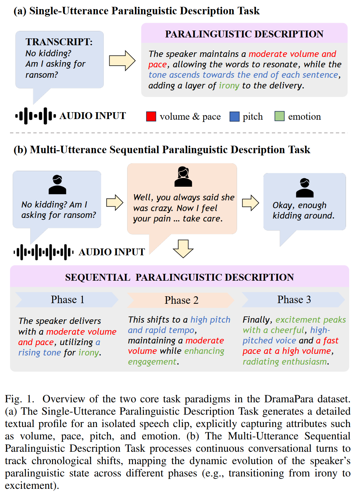
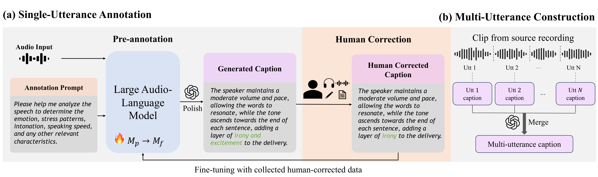

Fig. 1 Task paradigms

01 — Overview
Large audio-language models (LAMs) struggle to parse paralinguistics (e.g., emotion, intonation) in acoustically complex environments. Existing datasets rely heavily on clean speech or studio recordings, causing a domain gap to real-world usage. We introduce DramaPara, a TV drama dataset with expressive emotions and naturalistic background effects for robust paralinguistic understanding. DramaPara includes two tasks: single-utterance isolated description (~492h) and multi-utterance sequential description (~213h). With mixed training (SFT + RL), open-source LAMs achieve a 30.93% average relative improvement in complex scenarios.
02 — Method


03 — Listen
Prior datasets are typically recorded in very clean acoustic conditions, and their emotions often carry noticeable acted characteristics. DramaPara contains far more realistic background sounds, while vocal expressions are more complex, intense, and natural — better reflecting real-world conversational scenarios.
The same opening line, heard two ways — first in isolation, then inside its full three-sentence exchange.
Read alone, the line is simply ironic. Inside the conversation, the caption tracks how the delivery moves: emotion words name what is felt, and shift words mark where the tone turns from one sentence to the next.
"No kidding? Am I asking for ransom?"
The speaker maintains a moderate volume and pace, allowing the words to resonate, while the tone ascends towards the end of each sentence, adding a layer of irony to the delivery.
1) "No kidding? Am I asking for ransom?"
2) "Well, you always said she was crazy. Now I feel your pain. Anyway, I just thought you should know, huh? Take care."
3) "Okay, enough kidding around."
The speaker delivers with a moderate volume and pace, utilizing a rising tone for irony. This shifts to a high pitch and rapid tempo, maintaining a moderate volume while enhancing engagement. Finally, excitement peaks with a cheerful, high-pitched voice and a fast pace at a high volume, radiating enthusiasm. The overall delivery effectively blends irony, liveliness, and excitement.
The same description task, written by the base model and by the fine-tuned model, each read against the ground truth.
The base model falls back on vague adjectives or a fixed Neutral / None / Medium template. After fine-tuning, the model reaches for precise emotion words and narrates how the tone shifts across sentences — landing much closer to the ground truth.
"Ellie, you can't call me! The cops are all over my ass because they think I helped you escape."
The speaker's voice carries a high pitch, brimming with a palpable urgency. Their tone is rapid, and their demeanor appears tense, effectively communicating a deep sense of desperation. The volume is moderate.
The speaker's voice is high-pitched and emotional, with a lot of stress on certain words. They speak quickly and with a lot of intensity.
The speaker's voice, characterized by its high pitch and rapid tempo, conveys a sense of urgency and desperation, delivered at a moderate volume.
1) "No kidding? Am I asking for ransom?"
2) "Well, you always said she was crazy. Now I feel your pain. Anyway, I just thought you should know, huh? Take care."
3) "Okay, enough kidding around."
The speaker delivers with a moderate volume and pace, utilizing a rising tone for irony. This shifts to a high pitch and rapid tempo, maintaining a moderate volume while enhancing engagement. Finally, excitement peaks with a cheerful, high-pitched voice and a fast pace at a high volume, radiating enthusiasm.
1. 'No kidding, am I asking for ransom? You always said she was crazy. Anyway, I just thought you should know, take care.' Emotion: Neutral; Stress: None; Intonation: Neutral; Speed: Medium. 2. 'Okay, enough kidding around.' Emotion: Neutral; Stress: None; Intonation: Neutral; Speed: Medium.
Initially, a sarcastic and mocking tone is used, characterized by a high-pitched, rapid voice and moderate volume. This shifts to a calm, steady voice with low volume and gentle upward intonation, conveying empathy. Finally, a cheerful and relaxed tone is adopted, maintaining a moderate pace and volume, with rising intonation at the end of sentences.
04 — Provenance
Selection criterion: from popular American TV series, we prioritized shows with relatively richer scene diversity and more expressive character portrayals.